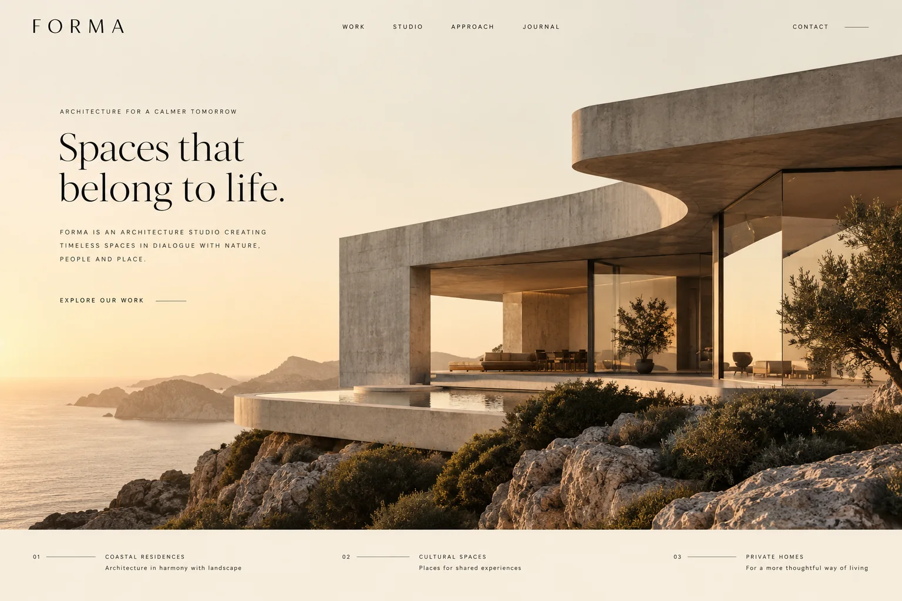

← Back to projects
CONCEPT PROJECT / ARCHITECTURE / WEBSITE
Forma Studio.
A quieter stage for ambitious architecture.

THE IDEA / ARCHITECTURE / WEBSITE
Space for the work to speak.
Forma is a fictional architecture studio with a clear point of view. This concept gives its projects room to breathe through generous imagery, restrained typography, and a simple route from inspiration to inquiry.
Creative directionWeb designDevelopment
This is an illustrative concept for a fictional client, not a completed customer engagement.